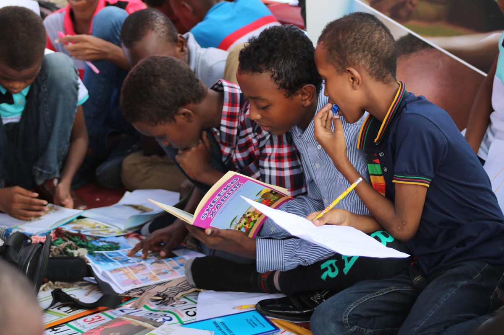

Testimonials :
- “If only all sponsors could see the good work their money provides and how they really are making a difference. It’s impossible to really appreciate the work ... until you see it with your own eyes. I heartily encourage anyone ... to make a visit.”
- - ROB H., CI SPONSOR SINCE 2010
- “You’re changing lives. The donation is just one small piece of it. All the time that people put in at community centers providing services is a huge endeavor. I’m just a piece of it. It’s much, much bigger than just me. It’s a great organization to be a part of. You selfishly feel good about yourself doing these things.”
- - KENT M., CI SPONSOR SINCE 2006
Global Ranking